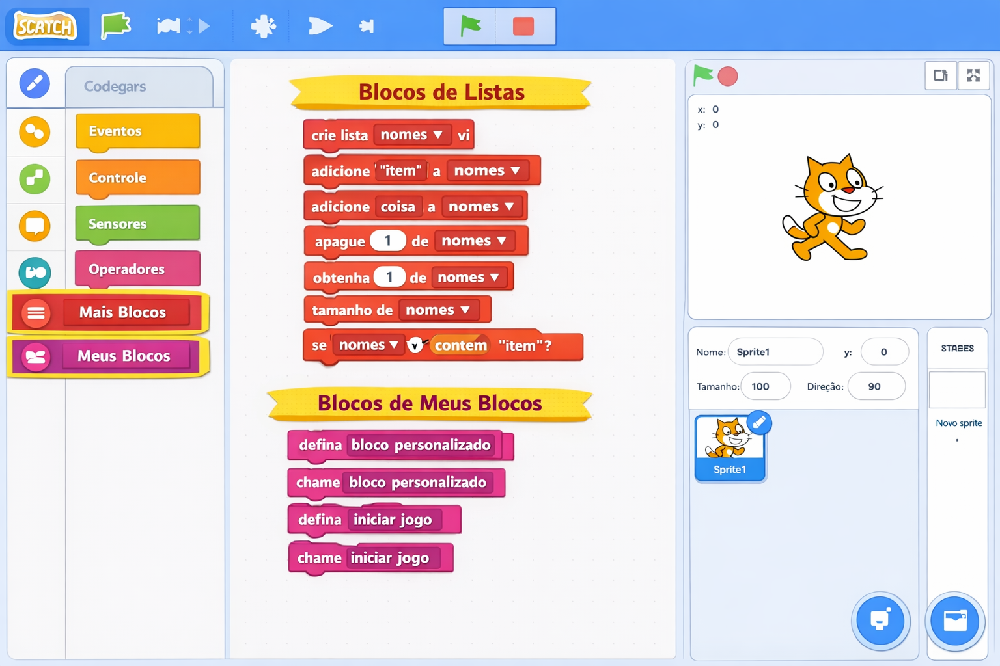

Cartilha Pedagógica: Scratch no Ensino Fundamental II
Uma sequência didática para desenvolver o Pensamento Computacional do 6º ao 9º ano
APRESENTAÇÃO
Este material foi desenvolvido para apoiar professores do Ensino Fundamental II (6º ao 9º ano) na implementação de uma sequência didática completa utilizando a plataforma Scratch. Diferente do material para os anos iniciais, este guia aprofunda os conceitos de programação, explorando estruturas de dados (listas), criação de blocos personalizados (procedimentos), sistemas complexos com múltiplas variáveis e a integração com outras áreas do conhecimento, como Matemática, Ciências, Geografia e Língua Portuguesa, em consonância com a Base Nacional Comum Curricular (BNCC) e as Diretrizes Curriculares do Estado do Paraná.
Acreditamos que, nesta fase, os estudantes estão prontos para desafios mais complexos, que exigem raciocínio abstrato e resolução sistemática de problemas. O Scratch, com sua interface visual e poderosa, continua sendo a ferramenta ideal para explorar esses conceitos, servindo como uma ponte perfeita para linguagens textuais como Python no Ensino Médio.
RESUMO ACADÊMICO E ALINHAMENTO CURRICULAR
Esta cartilha apresenta uma progressão de aprendizagem em Pensamento Computacional e programação com Scratch, organizada por ano escolar (6º ao 9º). A sequência foi elaborada para atender à Competência Geral 5 da BNCC (Cultura Digital), que prevê "compreender, utilizar e criar tecnologias digitais de forma crítica, significativa, reflexiva e ética". Além disso, o material dialoga com as habilidades de outras áreas, como Matemática (criação de algoritmos, resolução de problemas), Ciências (simulação de sistemas) e Língua Portuguesa (produção de narrativas interativas).
Metodologicamente, utilizamos a abordagem da Computação Criativa, que valoriza a expressão pessoal, a experimentação e a construção de projetos significativos para o estudante. A sequência é dividida em quatro eixos principais de desenvolvimento, um para cada ano, garantindo uma curva de aprendizado gradual e desafiadora.
📚 Progressão da Aprendizagem: 6º ao 9º Ano
6º Ano
Eixo: Fundamentos e Narrativas
Conceitos: Sequências, eventos, coordenadas, sincronização de diálogos.
Projeto Principal: Narrativa Interativa com Múltiplas Escolhas.
7º Ano
Eixo: Lógica e Jogabilidade
Conceitos: Condicionais, variáveis, laços de repetição, detecção de colisão.
Projeto Principal: Jogo de Perguntas e Respostas (Quiz).
8º Ano
Eixo: Simulação e Otimização
Conceitos: Clones, listas (arrays), operadores matemáticos avançados, otimização de código.
Projeto Principal: Simulador de Ecossistema ou Corrida de Clones.
9º Ano
Eixo: Autoria e Projetos Integradores
Conceitos: Blocos personalizados (procedimentos), sistemas de pontuação complexos, integração com hardware (Arduino via Scratch).
Projeto Principal: Super Trunfo (com listas) e Ponte para Python.
SUMÁRIO DA SEQUÊNCIA DIDÁTICA
- Introdução ao Scratch para o Ensino Fundamental II
- Projetos para o 6º Ano: Narrativas Interativas e Jogos de Aventura
- Projetos para o 7º Ano: Jogos de Perguntas e Respostas (Quiz)
- Projetos para o 8º Ano: Simulações e Jogos com Clones
- Projetos para o 9º Ano: Super Trunfo e Ponte para Linguagens Textuais
- Planos de Aula Detalhados (com BNCC e DCE-PR)
- Referências Bibliográficas e Materiais de Apoio
1. INTRODUÇÃO AO SCRATCH PARA O ENSINO FUNDAMENTAL II
Revisitando a Plataforma com um Olhar Mais Técnico

Nos anos iniciais, os alunos exploraram o básico do Scratch. Agora, vamos nos aprofundar! Embora a interface seja a mesma, o foco muda para conceitos fundamentais da Ciência da Computação, como: listas (para armazenar dados), blocos personalizados (para criar funções) e gerenciamento de clones (para sistemas complexos).
Características principais para este nível:
- Abstração: Criar blocos próprios para organizar e reutilizar o código.
- Estruturas de Dados: Utilizar listas para guardar pontuações, perguntas ou informações de um jogo.
- Otimização: Refatorar códigos repetitivos, utilizando loops e blocos personalizados.
- Interdisciplinaridade: Integrar conhecimentos de outras disciplinas para criar projetos complexos e contextualizados.
💡 Dica para o Professor:
No início de cada ano, faça uma breve revisão da interface, mas foque em apresentar os novos blocos que serão explorados. Use metáforas: "Uma lista é como uma prateleira com vários compartimentos" e "Um bloco personalizado é como uma máquina que faz uma tarefa específica, que você pode usar várias vezes."